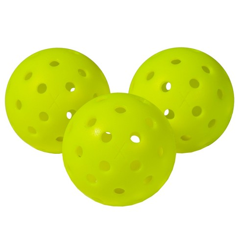
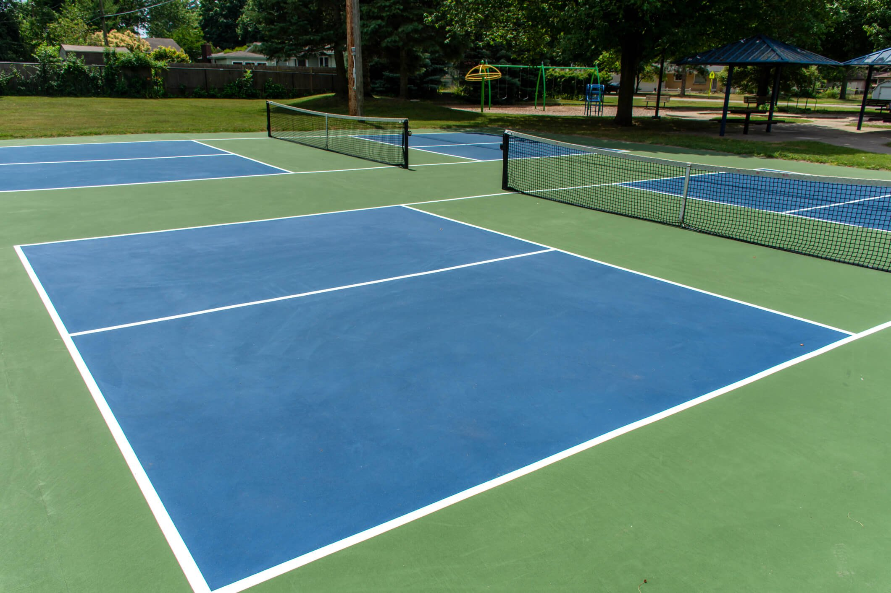

What You Need to Play
1. A durable paddle

Having a decent, durable paddle is one of the most important factors of being a good pickleballer. But rememember, it is not the arrow, but the Indian.
2. Pickleballs
Pickleballs are a necessity in being order to play a game. Make sure that you have many pickleballs, so you don't have to chase them if you hit it away. It is also good to have multiple balls incase one cracks.
3. Accessible courts or a net
Head to your local pickleball courts or a flat large cement area and set up your own game! A standard pickleball court happens to be around the same size as a doubles badminton court and the court measures 44 feet long (inclusive of lines) and 20 feet wide (inclusive of lines). The net height of a pickleball court is 36 inches high at the sidelines and 34 inches high in the middle. The kitchen is spans 7 feet from the net on both sides.
4. Grab some friends!
Get some of your best pickleball friends and get a game going! Now go my friend, your pickleball journey awaits! I will be "dinking" about you!